Sometimes, it can be useful to find the average rate of change of a function.
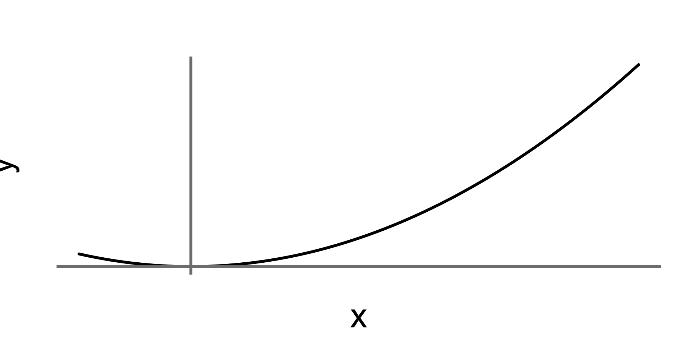
Day 4: Bren Math Workshop
Carmen Galaz García, Ph.D.
Bren School of Environmental Science & Management
Slope (average)
Sometimes, it can be useful to find the average rate of change of a function.
✏️

Slope (average)
Sometimes, it can be useful to find the average rate of change of a function.
Between any two points \((x_1,y_1)\) and \((x_2,y_2)\) on the graph of a function, the slope is found by:
\[m=\frac{\Delta y}{\Delta x}=\frac{y_2-y_1}{x_2-x_1}\]
Same idea as in a line!
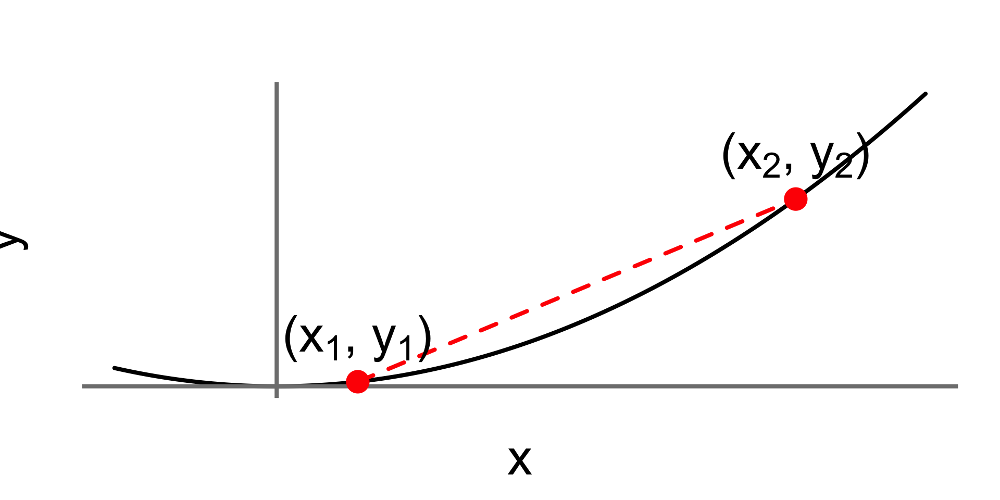
Slope represents rate of change
Ice-core data before 1958. Mauna Loa data after 1958.
Source:The Keeling Curve
Get into the practice of saying the meaning out loud
For example:
“Between 1972 and 2020 the price of hobbit homes increased by an average of $2,450 per year”
differs from
“Between 1972 and 2020 the price of hobbit homes increased by $2,450 per year.”
Slope practice
✏️ A community air-quality monitoring group tracked the additional fine particulate matter concentration, \(P(t)\) (µg/m³ of PM2.5 above baseline), in the neighborhood’s air over 20 days of a construction phase.
| \(t\) (days) | \(P(t)\) (µg/m³) |
|---|---|
| 2 | 14.4 |
| 6 | 33.6 |
| 10 | 40.0 |
| 14 | 33.6 |
| 18 | 14.4 |

Slope practice
\(P(t)\) measures µg/m³ of PM2.5 above baseline in the neighborhood’s air over the 20 days of that construction phase.
| \(t\) (days) | \(P(t)\) (µg/m³) |
|---|---|
| 2 | 14.4 |
| 6 | 33.6 |
| 10 | 40.0 |
| 14 | 33.6 |
| 18 | 14.4 |
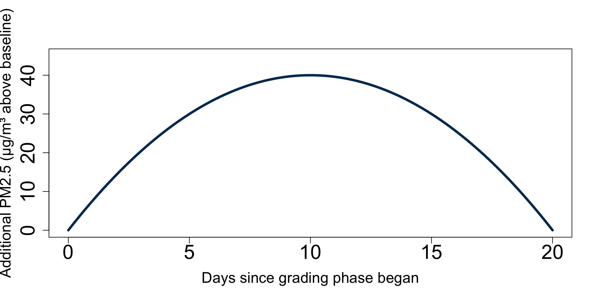
✏️
Slope practice
The average slope of a continuous function rarely tells the whole story
Slope can be average or instantaneous
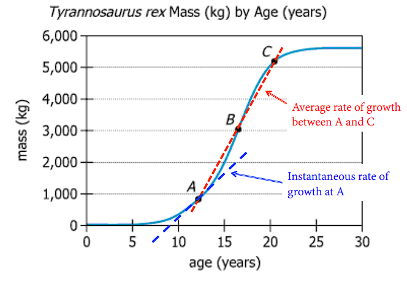
Limits
✏️
Limits
Definition
We say a number \(L\) is the limit of a function \(f(x)\) as its variable \(x\) approaches a number \(c\), if the function’s output values \(f(x)\) approach \(L\) when \(x\) get closer to \(c\).
We write this symbolically as:
\[ \large \lim_{x\to c} f(x)=L \]
We read this as: “The limit of \(f(x)\) as \(x\) approaches \(c\) is \(L\).”
Limits example: numerical
What is the limit of \(f(x)=2x^2-4\) as \(x\) approaches 2?
We need to examine the values of \(f(x)\) as \(x\) gets closer to 2 from both sides.
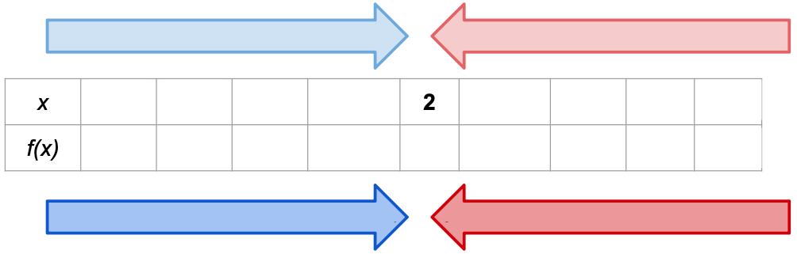
✏️
Limits example: numerical
What is the limit of \(f(x)=2x^2-4\) as \(x\) approaches 2?
We need to examine the values of \(f(x)\) as \(x\) gets closer to 2 from both sides.
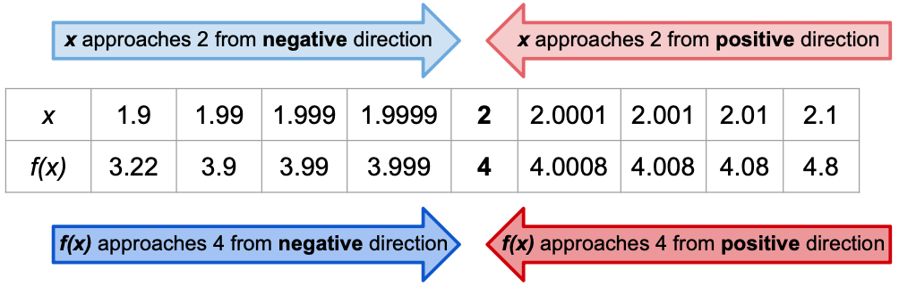
From both directions it looks like \(f(x)\) converges to 4.
So, we say that “The limit of \(2x^2-4\) as \(x\) approaches 2 is 4”. We can write it like this:
\[ \lim_{x\to 2}(2x^2-4)=4 \]
Limits example: graph
What is the limit of \(f(x)=2x^2-4\) as \(x\) approaches 2?
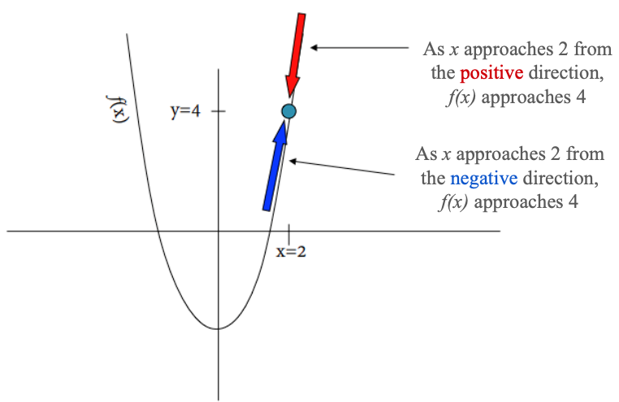
From both directions it looks like \(f(x)\) converges to 4.
So, \(\lim_{x\to 2}(2x^2-4)=4\).
Average slope
✏️
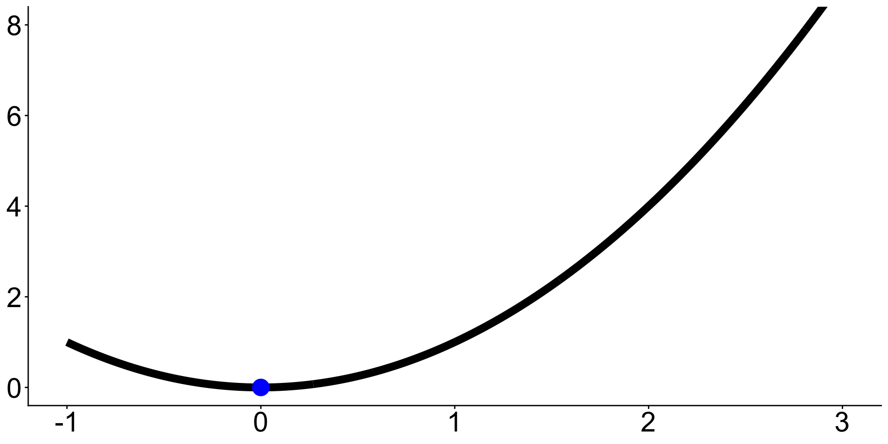
Start with:
Nearby point:
Average slope:
Average slope
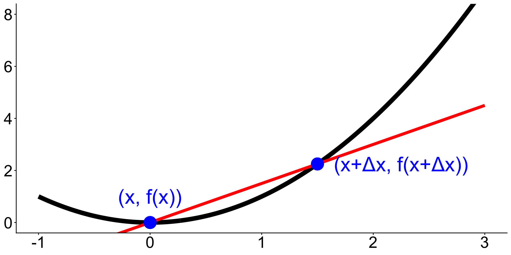
Start with a point \((x,f(x))\) on the graph.
A nearby point can be \((x+\Delta x, f(x+\Delta x))\), where \(\Delta x\) is a short distance from \(x\).
The average slope between \((x,f(x))\) and \((x+\Delta x, f(x+\Delta x))\) is given by
\[\text{average slope} = \frac{f(x+\Delta x) - f(x)}{(x+\Delta x)-x} = \frac{f(x+\Delta x) - f(x)}{\Delta x}.\]
What happens when \(\Delta x\) becomes smaller and smaller?
What happens when \(\Delta x \to 0\)?
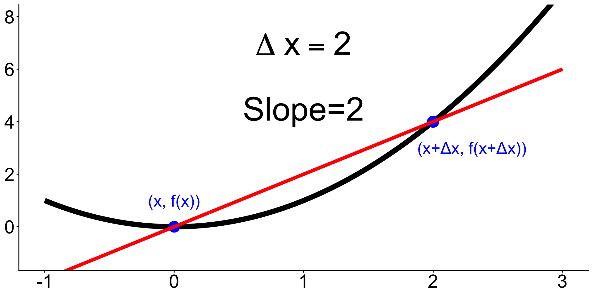
What happens when \(\Delta x \to 0\)?
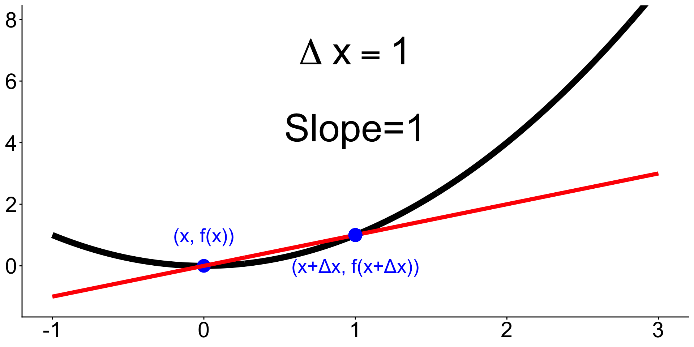
What happens when \(\Delta x \to 0\)?
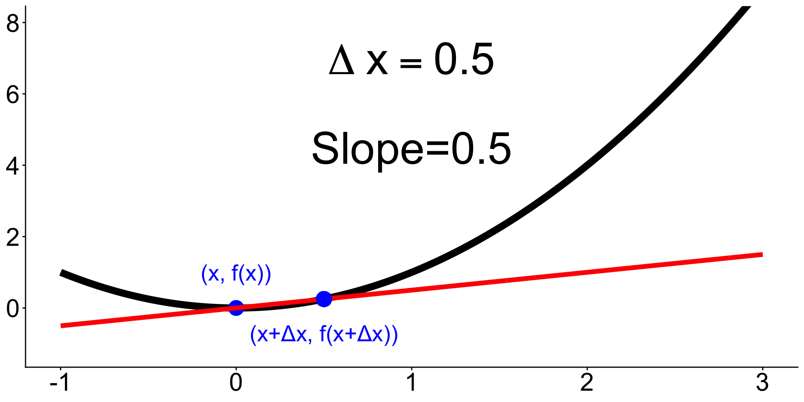
What happens when \(\Delta x \to 0\)?
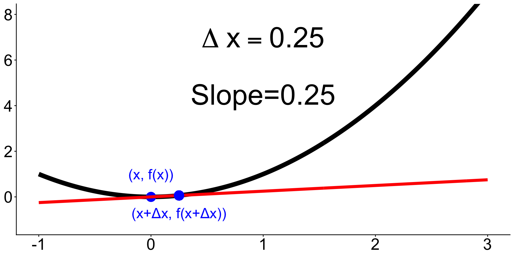
Tangent lines
What if we let \(\Delta x=0\)?
Then we would have the slope of a line that only touches the graph at exactly \((x, f(x))\).
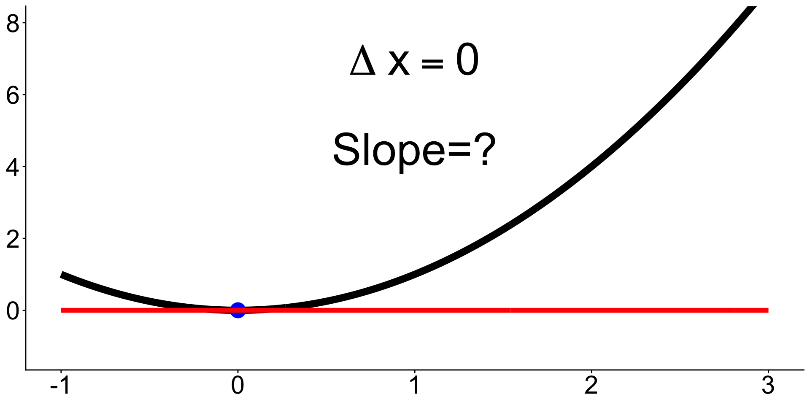
These very special types of lines are called tangent lines.
Derivative definition
Remember the slope of the line that passes between two points \((x_1, y_1)\) and \((x_2, y_2)\) is:
\[\text{slope}=\frac{y_2-y_1}{x_2-x_1}.\]
Derivative definition
Remember the slope of the line that passes between two points \((x_1, y_1)\) and \((x_2, y_2)\) is:
\[\text{slope}=\frac{y_2-y_1}{x_2-x_1}.\]
If we have a function \(f(x)\), then \((x,f(x))\) represents a point on its graph.
Choose a different point on the graph that is \(\Delta x\) away: \((x+\Delta x,f(x+\Delta x))\).
Derivative definition
Remember the slope of the line that passes between two points \((x_1, y_1)\) and \((x_2, y_2)\) is:
\[\text{slope}=\frac{y_2-y_1}{x_2-x_1}.\]
If we have a function \(f(x)\), then \((x,f(x))\) represents a point on its graph.
Choose a different point on the graph that is \(\Delta x\) away: \((x+\Delta x,f(x+\Delta x))\).
Plug these points on the graph of \(f(x)\) into the slope equation:
\[ \text{slope}=\frac{f(x+\Delta x)-f(x)}{\Delta x}. \]
Derivative definition
Remember the slope of the line that passes between two points \((x_1, y_1)\) and \((x_2, y_2)\) is:
\[\text{slope}=\frac{y_2-y_1}{x_2-x_1}.\]
If we have a function \(f(x)\), then \((x,f(x))\) represents a point on its graph.
Choose a different point on the graph that is \(\Delta x\) away: \((x+\Delta x,f(x+\Delta x))\).
Plug these points on the graph of \(f(x)\) into the slope equation:
\[ \text{slope}=\frac{f(x+\Delta x)-f(x)}{\Delta x}. \]
When we let \(\Delta x \to 0\) we get the slope of the tangent line at \(x\)
\[ \large f'(x)=\lim_{\Delta x \to 0} \frac{f(x+\Delta x)-f(x)}{\Delta x} \]
This is the derivative of \(f\) at \(x\). Also denoted \(\frac{df}{dx}\).
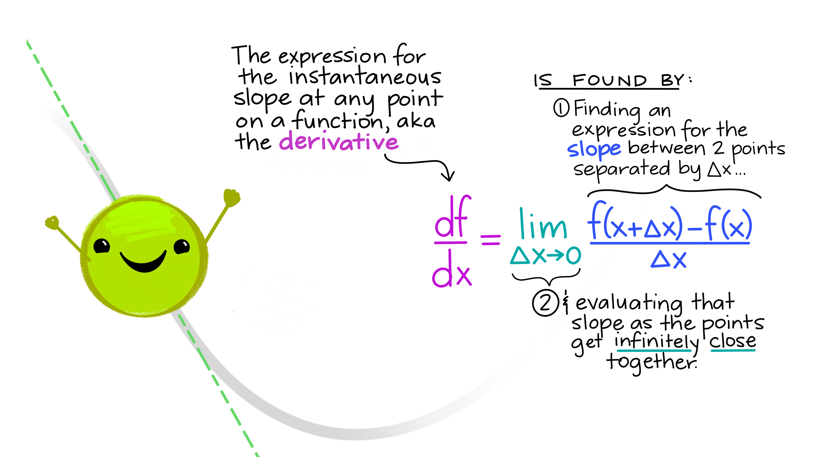
Artwork by Allison Horst
Calculus and derivatives are used to study change
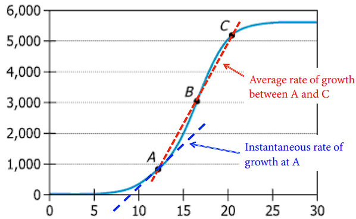
Environmental Science studies change
🤔 Talk with a partner, what are 2 fields of environmental science where studying the rate of change and derivatives would be important?
Let’s take a 10 minute break
image: Flaticon.com
Relationship between functions and their derivatives
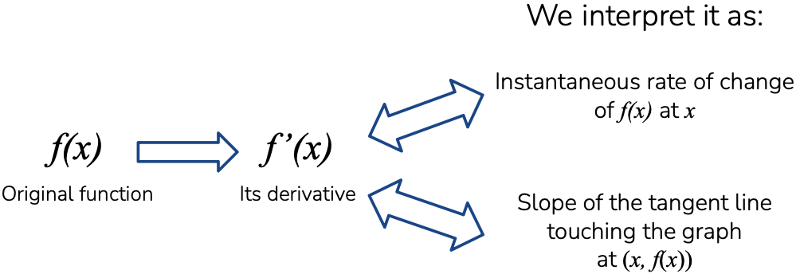
Remember: \(f'(x) = \frac{df}{dx}\) is the derivative of \(f(x)\). Same thing, different notation!
Units of the derivative
If we have a function \(f(x)\), then
\(f'(x)\) is approximately equal to the change in \(f(x)\) when the variable \(x\) increases by 1 unit.
✏️ Example:
Units of the derivative
If we have a function \(f(x)\), then
the units for \(f'(x)\) are the units of \(f(x)\) divided by the units of \(x\).
\(f'(x)\) is approximately equal to the change in \(f(x)\) when the variable \(x\) increases by 1 unit.
✏️ Example:
Units of the derivative
✏️
The cost of extracting \(T\) tons of ore from a copper mine is \(C = f(T)\) dollars. What does it mean to say that \(f'(2000) = 100\)?
Write your answer as a full sentence, with units.
Units of the derivative
✏️
The cost of extracting \(T\) tons of ore from a copper mine is \(C = f(T)\) dollars. What does it mean to say that \(f'(2000) = 100\)?
Write your answer as a full sentence, with units.
Units of \(f'\) are dollars per ton, so \(f'(2000) = 100\) dollars per ton.
When 2000 tons have been extracted, the cost of extraction increases at a rate of $100 per ton.
When 2000 tons of ore have already been extracted from the mine, the cost of extracting the next ton is approximately $100 more.
Sign of the derivative
Sign of the derivative
\[f'(a) > 0 \implies \text{function is increasing near } a\]
\[f'(a) < 0 \implies \text{function is decreasing near } a\]
Sign of the derivative practice
✏️

Sign of the derivative practice
✏️
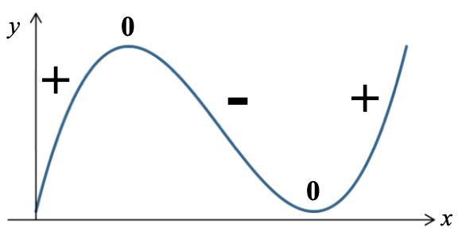
Sign of the derivative practice
✏️
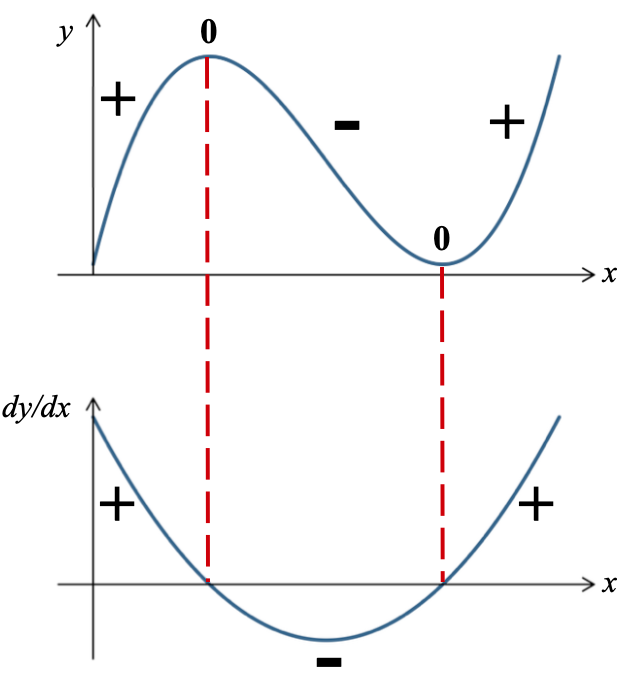
Application: Logistic growth
In logistic growth, the population \(N\) grows rapidly at first, but then slows down as it approaches a maximum population size \(K\), called the carrying capacity.
✏️
What does it mean that \(\frac{dN}{dt}\) is positive, negative, or zero in terms of the population growth?
When do you think \(\frac{dN}{dt}\) is positive, negative, or zero?
When is population growth fastest?
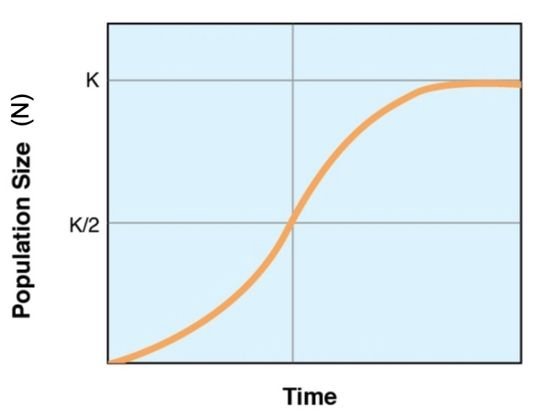
Application: Logistic growth
Rules for differentiation (1)
Constant Rule ✏️
Power Rule ✏️
Rules for differentiation (1)
Constant Rule
Let \(c\) be a constant (so, a number). If \(f(x) = c\), then \(f'(x)=0\). Equivalently
\[\frac{d}{dx}c = 0\]
Power Rule
Let \(n\) be a (real) number, if \(f(x)= x^n\), then \(f'(x) = nx^{n-1}\). Equivalently \[ \frac{d}{dx}[x^n] =nx^{n-1}. \]
Examples ✏️
\[ \begin{align} &y=100 & &f(x)=x^5 & &f(x)=\frac{1}{x^2} \end{align} \]
Rules for differentiation (2)
Sum and Difference Rules
✏️
Rules for differentiation (2)
Sum and Difference Rules
Let \(f(x)\) and \(g(x)\) be differentiable functions. Then
\[ \begin{align} \frac{d}{dx}[f(x)+g(x)]=\frac{d}{dx}f(x)+\frac{d}{dx}g(x) \\ \frac{d}{dx}[f(x)-g(x)]=\frac{d}{dx}f(x)-\frac{d}{dx}g(x) \end{align} \]
😵All this says is: if the function has pieces that are added or subtracted you can take the derivative of each individual piece and add those derivatives.
The \(\frac{d}{dx}\) notation can be a lot here, the prime notation is a bit better:
\[ \begin{align} [f(x)+g(x)]'=f'(x)+g'(x) \\ [f(x)-g(x)]'=f'(x)-g'(x) \end{align} \]
✏️ Example
\[ f(x)=x^3-x^2-15 \]
Rules for differentiation (3)
Constant Multiplier Rule
✏️
Rules for differentiation (3)
Constant Multiplier Rule
The derivative of a constant \(c\) multiplied by a function \(f(x)\) is the same as the constant multiplied by the derivative:
\[\frac{d}{dx}[kf(x)] = k\frac{d}{dx}f(x)\]
✏️ Example
Rules for differentiation (3)
Constant Multiplier Rule
The derivative of a constant \(c\) multiplied by a function \(f(x)\) is the same as the constant multiplied by the derivative:
\[\frac{d}{dx}[kf(x)] = k\frac{d}{dx}f(x)\]
✏️ Example
\[ y=x^2+\sqrt{2}x-\frac{8}{x}+4 \]
Derivative of logs & exponents
Two special derivatives:
Summary of differentiation rules
| Differentiation Rule | \(f'(x)\) notation | \(\frac{d}{dx}\) notation |
|---|---|---|
| Constant Rule | \(f(x)=c \Rightarrow f'(x)=0\) | \(\frac{d}{dx}[c]=0\) |
| Power Rule | \(f(x)=x^n \Rightarrow f'(x)=n x^{n-1}\) | \(\frac{d}{dx}[x^n]=n x^{n-1}\) |
| Sum Rule | \((g(x)+h(x))'=g'(x)+h'(x)\) | \(\frac{d}{dx}[g(x)+h(x)]=\frac{d}{dx}g(x)+\frac{d}{dx}h(x)\) |
| Difference Rule | \((g(x)-h(x))' = g'(x)-h'(x)\) | \(\frac{d}{dx}[g(x)-h(x)]=\frac{d}{dx}g(x)-\frac{d}{dx}h(x)\) |
| Constant Multiplier Rule | \((c\cdot g(x))'=c\,g'(x)\) | \(\frac{d}{dx}[c\,g(x)]=c\,\frac{d}{dx}g(x)\) |
And two special derivatives: \(\frac{d}{dx}(e^x) = e^x\) and \(\frac{d}{dx}ln(x)=\frac{1}{x}\).
There’s more differentiation rules (product, quotient, chain rule).
They’re fun, but we won’t be reviewing them.
Higher order derivatives
We can continue to take derivatives of derivatives.
The second derivative becomes the rate of change of the rate of change.
If we interpret the first derivative as velocity, then the second derivative is acceleration.
Notation:
Derivatives practice
Solve individually and then check with a partner.
\[ \begin{align} \text{A) }& f(x)=3x^4 &\text{B) } y=4x^2+3x-16 \end{align} \]
\[ \begin{align} &\text{A) } y=3x^2 & &\text{B) }h(x)=2x(x^2 + 3x) & &\text{C) }g(y)=2\sqrt{y} - e^y + 20\ln(y) \end{align} \]
\[G(z)=3z^4-8z^3+2z-19\]
Derivatives practice
✏️ Let’s see a solution!
2.B) Find the derivative \[h(x)=2x(x^2 + 3x)\]
Derivatives practice
✏️ Let’s see a solution!
2.C) Find the derivative \[g(y)=2\sqrt{y} - e^y + 20\ln(y)\]
Derivatives practice
✏️ Let’s see a solution!
Derivatives solution
\[ \begin{align} \text{A) }& f(x)=3x^4 &\text{B) } y=4x^2+3x-16 \end{align} \]
Power Rule (with the Constant Multiplier Rule)
Sum/Difference Rule, Power Rule, Constant Multiplier Rule, and Constant Rule (for \(-16\))
\[ \begin{align} &\text{A) } y=3x^2 & &\text{B) }h(x)=2x(x^2 + 3x) \end{align} \]
\(y' = 3\cdot 2x^{(2-1)} = 6x\)
First expand: \(h(x) = 2x\cdot x^2 + 2x \cdot 3x = 2x^3+6x^2\)
Then differentiate term by term: \(h'(x) = 2\cdot 3x^{(3-1)} + 6\cdot 2x^{(2-1)} = 6x^2+12x\)
Derivatives solution
\[ g(y)=2\sqrt{y} - e^y + 20\ln(y) \]
Rewrite \(\sqrt{y}\) as \(y^{1/2}\):
\[ \begin{align} g(y) &= 2y^{1/2}-e^y+20\ln(y)\\ g'(y) &= 2\cdot\frac{1}{2}y^{(1/2-1)} - e^y + 20\cdot\frac{1}{y}\\ &= \frac{1}{\sqrt{y}} - e^y + \frac{20}{y} \end{align} \]
Derivatives solution
\[G(z)=3z^4-8z^3+2z-19\]
\[ \begin{align} G'(z) &= 3\cdot 4z^{(4-1)} - 8\cdot 3z^{(3-1)} + 2\cdot 1z^{(1-1)} - 0 = 12z^3-24z^2+2\\ G''(z) &= 12\cdot 3z^{(3-1)} - 24\cdot 2z^{(2-1)} + 0 = 36z^2-48z\\ G'''(z) &= 36\cdot 2z^{(2-1)} - 48\cdot 1z^{(1-1)} = 72z-48 \end{align} \]
Get some extra practice!
What we covered today